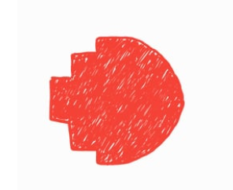

MY INTEREST IN IT
What is your interest in IT? When did your interest in IT start? Was there a particular event or person that sparked your interest? Outline your IT experience (if any)?
- Up until now, I haven’t found out what is my particular interest in IT yet, I just feel like it and I am really into IT. Maybe I will figure it out while studying, soon.
- I am not sure when did it start, but since I was in middle school, I have always been into Technology but I didn’t realize, I thought it was just one off my favorite topics read about. I’ve been exposed to technology since I was small and I was amazed with what technology could do, for example: “WOW, THE INTERNET IS SO COOOOOL; WOW, SMARTPHONE IS LIKE A MINI COMPUTER, WILL I BE COOLER IF I HAVE A PHONE, e.t.c. Those experience might have started my love for technology. It was not until the second half of my 12th grade did I realized I have an interest in IT, that was also the moment I decided to study IT.
- Actually, there wasn’t any event or person that sparked my interest. My liking was just there and grew little by little through time. I don’t know why but I feel like I just want to. Technology now has a very important role in our modern daily life, its impact has reached a scale that has never been seen in mankind history. The idea that something I create can have such impact on others life, or the fact that technology can make our future somethings that the old generate could never have dreamt of, is very seducing and charming on its own way, and that is probably what has driven my interest and passion for IT.
- To be honest, I am a total newbie to IT, I have no experience and I know nothing about coding but I can learn, I don’t have skills but I have strong determination!! Creating this website fills me with determination (actually not but I am just trying to be funny…).
- Sorry for the childhood story but I really don’t know how to describe that part properly.
Why did you choose to come to RMIT?
I chose RMIT because this university has very good reputation, has undeniable world-class teaching quality. At RMIT, I can learn from IT experts and the programs here are kept up to date with latest trends in the industry. RMIT also have the best facilities with can provides me with the best education. I want to experience the internationa l environment at RMIT as this will help me gain social skills that is needed for my future career. Besides excellent quality, I think RMIT can also help me develop and complete my character. In general, RMIT has all that I need. One last thing, RMIT students don’t have to study Marxism-Leninism. My only problem at RMIT is that I haven’t got new friends yet.
What do you expect to learn during your study?
I wish to learn as much as possible because knowledge will never be redundant. Right now, I hope that I can learn all the basics of IT and some skills related to:
1. Cloud computing 2. Cybersecurity 3. Application development and programming 4. Networking and wireless 5. Analytics and data management e.t.c
Moreover, I expect to develop my soft skills, teamworking skills and a professional working attitude because those skill are essential for my future. At the moment my shyness is preventing me from achieving my goal so I also hope that studying at RMIT can help me improve my confidence.

IDEAL JOB-INFORMATION SECURITY ANALYST
Description about the job
The job of an information security analyst is to protect all important and sensitive information, networks and systems of the company, secure and keep information safe from cyberattacks and hackers; identifying problems and potential threats, defending the organization’s cyber weaknesses. Unfortunately, I have yet to find out my ideal job, until I can find a job that suit me the most, information security analyst is my most favorite. I have been considered this problem for a few weeks but I still cannot figure it out.
Requirements for this job
Requires at least a bachelor’s degree in computer/technical related field, administrating network and system experience, programming skills. Some companies may require several years of experience. In order to be successful at this job, some other important skills are also required such as teamwork and cooperative skills, excellent management skills keep the team stay organized, thorough understanding about security concepts and must be up-to-date e.t.c
My plan
1. Finish Bachelor’s degree in IT – because this job requires to hold at least a bachelor’s degree in computer/technical related field.
2. Finish Master’s in IT – many companies prefer candidates who have master’s degree. A master’s degree in business administration in information systems will increase my opportunity to get the job so I am considering about it.
3. Get a cybersecurity certification – is it necessary because I can demonstrate my level of expertise in the area.
4. Get these certificates, the more certificate the better
- CEH: Certified Ethical Hacker
- CISM: Certified Information Security Manager
- CISSP: Certified Information Systems Security Professional
- CompTIA Security+
- GIAC Certified Penetration Tester
- GSEC: SANS GIAC Security Essentials
5. Do internships to gain as much experience as possible – companies want to hire employee that have years of experience working in this field, so I have to prepare myself with as much knowledge and experience as I can so that I can have a better opportunity.
6. Apply for the job
7. Be a professional information security analyst.
8. Earn money.
Along with this plan, I will also do my best to improve soft skills such as Communication skills, problem solving, organizational skills, teamworking, etc. because I cannot work on my own, not only in work but also every other aspects of life. That’s why those soft skills are extremely essential.
*This is only my current plan and will be significantly changed over time.